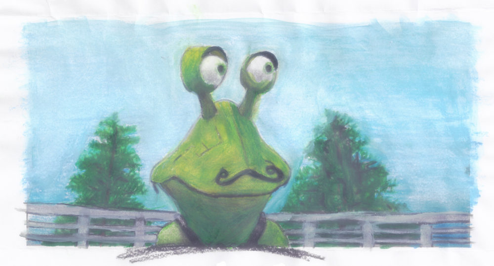

BillAndBuck.com
The Collected Stories of Bill and Buck
Stories By:
Joe "Joetainment" Crawford (The Narrator)
With research of archives provided by Qoia Oboticca (The Robot Reporter)
Bill and Buck originally created by Joe Crawford and Brent Kirby.
Dedication
For Maya, my very first niece.
I hope you enjoy these whimzical stories and colorful images.
Characters
Once upon another time line, in a little slice of the Multiverse not so dissimilar to our own, there lived a wonderful cast of characters...
Starring:
- The awfully cute Bill!
- ...and his pal Buck!
- with Molly too!
- +Burt! (the Frog of inconsistent size)
- Joined by the incredible superhero RoKara
- ...and her sister, Qoiya, the genius detective journalist
- all antogonized by Wilbert, the smartest boy in the world, but also a mean little brat.
Featuring Special Guests
- Grumbette and her husband Grumple, two very lucky Guizamolfrehts
- Janet and her boyfriend Jake the Janitor
- Timmy and his sis Tammy
* Cute Pictures of Our Cast Go Here *
Lots of cute drawings and photos of Bill, Buck, Kara, Qoiya, and the gang will be shown here.

Burts stands outside enjoying a nice day.
Stories
Our cast had many adventures, and so many tales to tell.
With stories like how...
- Bill learned to smile, to laugh and even to love, on his way to true enlightenment.
- Buck traded his naivety for optimism, and learned how to be fun without being foolish.
- Burt discovered friends, and perhaps even "family", while learning all about the interesting creatures of planet Earth.
- Kara found that confidence and humility were better than arrogance and pride, especially for superheroes like her.
- Qoiya discovered the truth and shone a light for all to see.
- ...and Molly exploded.
***link to more stories, table of contents will go here***
But we might be getting ahead of ourselves, because if stories have beginnings, we should probably start there. Sure we'll will end up jumping around... but starting, at the start, makes sense to start, so let's start.
Our Story...